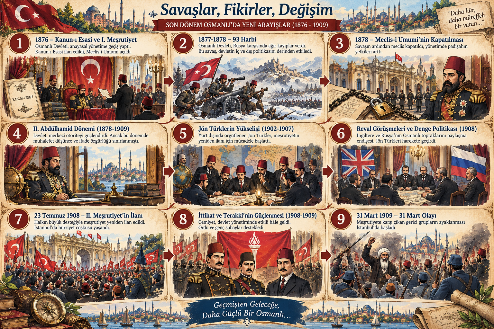
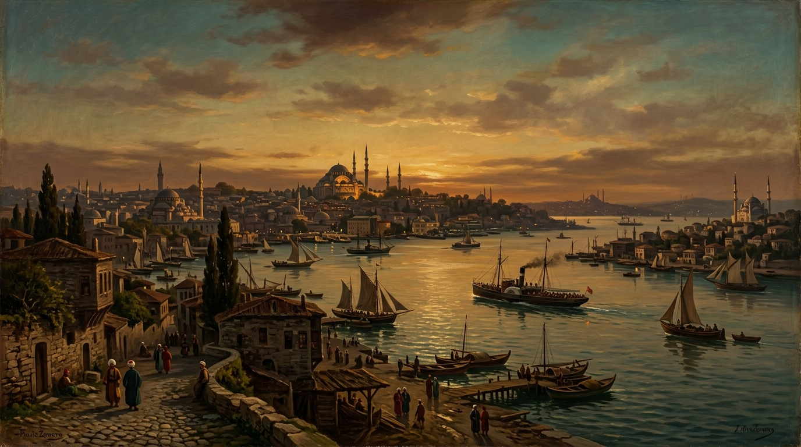

Bu etkinlikte; 1876 – 1909 yılları arasında Osmanlı Devleti'nde meydana gelen temel olayları, bu gelişmeleri hazırlayan nedenleri ve ortaya çıkan sonuçları etkileşimli bilgi görseli ve zaman kadranı üzerinden adım adım inceleyeceksiniz.

Kadranları çevirerek seçtiğiniz bir konunun neden, olay ve sonuç halkalarını üst ibrede bir araya getiriniz. Doğru eşleşme sağlandığında çarktaki diğer konular da eş zamanlı olarak çözülecek ve kilit açılacaktır.
1. Kadranı çevirerek neden seçiniz...
2. Kadranı çevirerek olay seçiniz...
3. Kadranı çevirerek sonuç seçiniz...